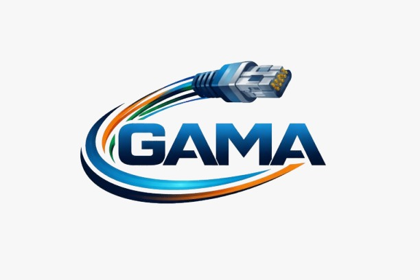

Infraestructura organizada, certificada y preparada para el crecimiento empresarial en México.
Solicitar Evaluación TécnicaEvaluamos espacios, canalizaciones y proyección de crecimiento bajo estándares técnicos.
Planeación conforme a estándares TIA/EIA para garantizar rendimiento y compatibilidad.
Infraestructura organizada con racks, patch panels y etiquetado profesional.
Redes de datos, voz y video con organización estructurada.
Validación técnica para garantizar estabilidad y rendimiento.
Optimización y reorganización de infraestructura existente.
Aunque el cableado estructurado representa una inversión inicial mayor que soluciones improvisadas, en el contexto empresarial mexicano genera ahorros significativos en mantenimiento, reducción de fallas y mayor productividad operativa. La correcta planeación disminuye tiempos de inactividad y evita rehacer instalaciones cada vez que la empresa crece.
| Aspecto | Instalación Improvisada | Cableado Estructurado GAMA |
|---|---|---|
| Inversión Inicial | Baja | Planificada y estratégica |
| Mantenimiento | Frecuente y costoso | Menor y controlado |
| Tiempo de Inactividad | Alto riesgo | Reducción significativa |
| Escalabilidad | Limitada | Preparada para crecimiento |
| Vida Útil | Corta | 15–25 años según estándar |
En GAMA convertimos el cableado estructurado en una inversión inteligente, no en un gasto operativo.